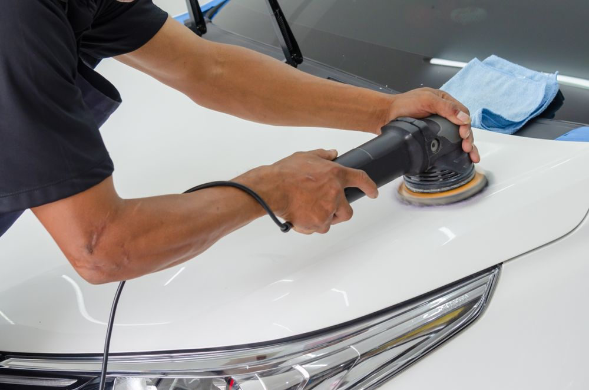

Mobile Detailing in Ponte Vedra Beach, FL
Full details, interior deep cleans, and ceramic coating built for salt air — delivered to your home or office anywhere in Ponte Vedra Beach.
Detailing built for where land meets sea
Ponte Vedra Beach is where a stretch of Atlantic coastline meets some of Florida's best-known golf communities — TPC Sawgrass, Marsh Landing, and the neighborhoods along Palm Valley Road. It's also where salt air, beach sand, and year-round sun put real, measurable wear on a car's paint and interior faster than an inland climate ever would. We built our mobile unit and our product choices around that fact.
There's no off-season here, so the calendar stays open every month — grab a slot online or just call or text if that's easier.

Replace: images/area-ponte-vedra-beach.jpg (900×675px)Neighborhoods and landmarks in our Ponte Vedra service area
A rough guide to the area — if your street isn't listed, we're almost certainly still in range.
Live in a gated community? Let us know when booking so we can coordinate with your gate ahead of time.
Mobile detailing in Ponte Vedra Beach — common questions
Do you serve neighborhoods near TPC Sawgrass and Marsh Landing?
Yes. Our mobile unit carries its own water and power, so we can detail your car in the driveway at home or in a guest/visitor parking area near Sawgrass, Marsh Landing, and Palm Valley — just let the gate know we're expected.
How much does mobile car detailing cost in Ponte Vedra Beach?
Standard Detail starts at $180, Interior Only Deep Clean at $225, a Full Detail at $360, and Ceramic Coating at $550 — all sedan/coupe base rates. SUVs and trucks run higher. Your exact price is confirmed before we start.
Is ceramic coating worth it for a car parked near the ocean?
For most Ponte Vedra Beach vehicles, yes — salt air accelerates clear coat breakdown faster than an inland climate. A properly applied ceramic coating gives real, measurable protection against it.
Do you serve Nocatee too?
Yes — Nocatee is part of our Ponte Vedra Beach service area. If you're further into St. Johns County or Jacksonville, reach out and we'll confirm coverage.
What Ponte Vedra Beach books most often
Ponte Vedra Beach, FL service area
Nocatee, St. Johns & Jacksonville — coming next
We're launching focused on Ponte Vedra Beach so every appointment gets our full attention. As we take on more of St. Johns County and Jacksonville, those areas will get their own dedicated pages here — reach out in the meantime and we'll confirm if we can already reach you.